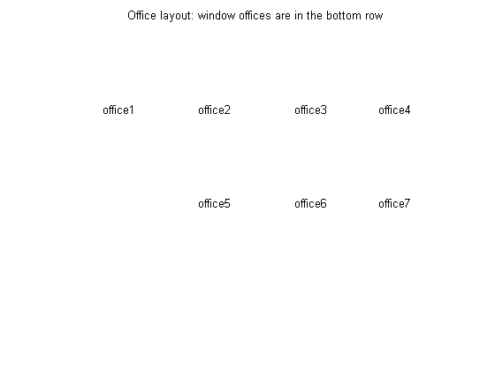
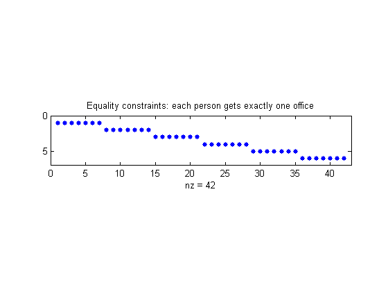
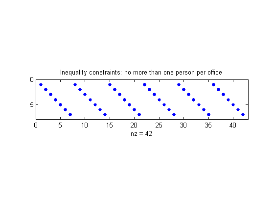
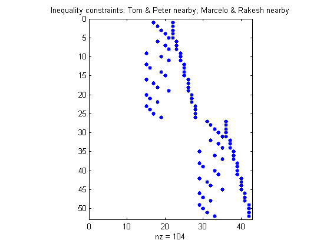
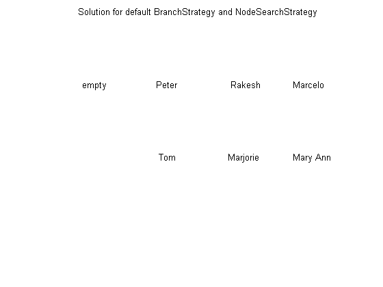
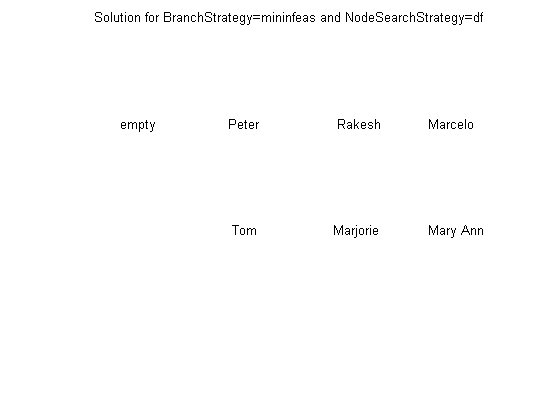

This demo shows how to formulate a binary integer programming problem called the office assignment problem. It then demonstrates how to solve the problem using BINTPROG.
We want to assign 6 people, Marcelo, Rakesh, Peter, Tom, Marjorie, and Mary Ann, to 7 offices. Each office can have no more than one person, and each person gets exactly one office. The people can give preferences for the offices, and their preferences are considered based on their seniority (the longer they have been at the MathWorks, the higher the seniority). Some offices have windows, some do not, and some windows are bigger than others. Additionally, Peter and Tom often work together, so we would like them to be no more than one office away, and Marcelo and Rakesh often work together so they also should be no more than one office away.
Offices 1, 2, 3, and 4 are inside offices (no windows). Offices 5, 6 and 7 have windows, but the window in office 5 is smaller than the other two. Here is how the offices are arranged.
text(0.1, .73, 'office1'); text(.35, .73, 'office2'); text(.60, .73, 'office3'); text(.82, .73, 'office4'); text(.35, .42, 'office5'); text(.60, .42, 'office6'); text(.82, .42, 'office7'); title('Office layout: window offices are in the bottom row'); axis off set(gcf,'color','w');
We need to select our problem formulation. The first step is to choose what each element of our variable x that we are solving for represents in our problem. Since this is a binary integer problem, a good choice is that each element represents a person assigned to an office. If the person is assigned to the office, the variable has value 1. If the person is not assigned to the office, the variable has value 0. We'll consider the people always in this order:
1. Mary Ann 2. Marjorie 3. Tom 4. Peter 5. Marcelo 6. Rakesh
We need x to be a vector. Then x(1) to x(7) is Mary Ann assigned to office 1, office 2, etc., to office 7. The next 7 elements are Marjorie assigned to the seven offices, etc. In all, our x vector has 42 elements since we have six people to assign to seven offices.
We will want to weight the preferences based on seniority so that the longer you have been at the MathWorks, the more your preferences count. The seniority is as follows: Mary Ann 9 years, Marjorie 10 years, Tom 5 years, Peter 3 years, Marcelo 1.5 years, and Rakesh 2 years. We can create a normalized weight vector based on seniority.
seniority = [9 10 5 3 1.5 2]; weightvector = seniority/sum(seniority);
We set up a preference matrix where the rows correspond to offices and the columns correspond to people. We ask each person to give values for each office so that the sum of all their choices, i.e., their column, sums to 100. A higher number means the person prefers the office. Tom is represented by column three, so Tom's desire to be in office six is "40", that is prefmatrix(6,3) is 40 because the sixth row is for the sixth office, and Tom is person 3 (column 3).
prefmatrix = [ 0 0 0 1 3 10 ;
0 0 0 3 4 10 ;
0 0 0 3 1 10 ;
0 0 0 3 2 10 ;
10 20 30 10 10 20 ;
40 40 40 40 40 20 ;
50 40 30 40 40 20 ];
We want to weight the preferences matrix by the weightvector to scale the columns by seniority. Also, it will be more convenient if we reshape this matrix as a vector in column-order so that it corresponds to our x vector.
PM = prefmatrix * diag(weightvector); c = PM(:);
Our objective is to maximize the satisfaction of the preferences weighted by seniority. This is a linear objective function
max c'*x
or equivalently
min -c'*x
The first set of constraints requires that each person gets exactly one office, that is for each person, the sum of the x values corresponding to that person is exactly one. For example, since Marjorie is the second person, this means that sum(x(8:14))=1. We can represent these linear constraints in an equality matrix Aeq and right hand side vector beq, where Aeq*x = beq, by building the appropriate matrices. The matrix Aeq consists of ones and zeros. For example, the second row of Aeq will correspond to Marjorie getting exactly one office, so the row will look like
0 0 0 0 0 0 0 1 1 1 1 1 1 1 0 0 0 0 0 0 0 0 0 0 0 0 ... 0 0 0
that is, seven ones in columns 8 through 14 and zeros elsewhere. Then Aeq(2,:)*x = 1 is equivalent to sum(x(8:14)) = 1.
numOffices = 7; numPeople = 6; numDim = numOffices * numPeople; onesvector = ones(1,numOffices); % Each row of Aeq corresponds to one person. Aeq = blkdiag(onesvector,onesvector,onesvector,onesvector, ... onesvector,onesvector); beq = ones(numPeople,1); % View the structure of Aeq, that is, where there are nonzeros (ones) figure; spy(Aeq) set(gcf,'color','w'); title('Equality constraints: each person gets exactly one office')
The second set of constraints are inequalities. These constraints specify that each office has no more than one person in it, i.e., each office has one person in it, or is empty. We build the matrix A and the vector b such that A*x <= b to capture these constraints. Each row of A and b corresponds to an office and so row 1 corresponds to people assigned to office 1. This time the rows have this type of pattern, for row 1:
1 0 0 0 0 0 0 1 0 0 0 0 0 0 1 0 0 0 0 0 0 ... 1 0 0 0 0 0 0
Each row after this is similar but shifted (circularly) to the right by one spot. For example, row 3 corresponds to office 3 and says that A(3,:)*x <= 1, i.e., office 3 cannot have more than one person in it.
e = eye(1,numOffices); A = repmat(e,numOffices,numPeople); for i = 2:7 A(i,:) = circshift(A(i-1,:),[0,1]); end b = ones(numOffices,1); % View the structure of Aeq, that is, where there are nonzeros (ones) figure; spy(A) set(gcf,'color','w'); title('Inequality constraints: no more than one person per office')
The next set of constraints are also inequalities, so we will add them to the matrix A and vector b, which already contain the inequalities from above. We want Tom and Peter no more than one office away, and the same with Marcelo and Rakesh. First we'll build the distance matrix of the offices based on their physical locations. This is a symmetric matrix.
D = zeros(numOffices); % Set up the top right half of the matrix D(1,2:end) = [1 2 3 2 3 4]; D(2,3:end) = [1 2 1 2 3]; D(3,4:end) = [1 2 1 2]; D(4,5:end) = [3 2 1]; D(5,6:end) = [1 2]; D(6,end) = 1; % The lower left half is the same as the upper right D = triu(D)' + D; % We find the offices that are more than one away. [officeA,officeB] = find(D > 1); numPairs = length(officeA)
numPairs =
26
This finds numPairs pairs of offices. For these numPairs, if Tom occupies one office in the pair, then Peter cannot occupy the other office in the pair, otherwise they will be more than one office away. The same for Marcelo and Rakesh. This gives 2*numPairs more inequality constraints which we will add to A and b.
% Add enough rows to A to accommodate these constraints.
numrows = 2*numPairs + numOffices;
A((numOffices+1):numrows, 1:numDim) = zeros(2*numPairs,numDim);
For each pair of offices in numPairs, for the x(i) that corresponds to Tom in officeA and for the x(j) that corresponds to Peter in OfficeB,
x(i) + x(j) <= 1
that is, either Tom or Peter can occupy one of these offices, but they both cannot.
for i = 1:numPairs % Tom is person 3 and Peter is person 4 tom = 3; peter = 4; tomInOfficeA = sub2ind([numOffices numPeople],officeA(i),tom); peterInOfficeB = sub2ind([numOffices numPeople],officeB(i),peter); A(i+numOffices, [tomInOfficeA, peterInOfficeB]) = 1; % Repeat for Marcelo and Rakesh, adding more rows to A and b. % Marcelo is person 5 and Rakesh is person 6 marcelo = 5; rakesh = 6; marceloInOfficeA = sub2ind([numOffices numPeople],officeA(i),marcelo); rakeshInOfficeB = sub2ind([numOffices numPeople],officeB(i),rakesh); A(i+numPairs+numOffices, [marceloInOfficeA, rakeshInOfficeB]) = 1; end b(numOffices+1:numOffices+2*numPairs) = ones(2*numPairs,1); % View the structure of the newly added constraints in A, that is, % where there are nonzeros (ones) figure; spy( A((numOffices+1):numrows,:) ) set(gcf,'color','w'); title('Inequality constraints: Tom & Peter nearby; Marcelo & Rakesh nearby')
Our problem formulation consists of a linear objective function
min -c'*x
subject to the linear constraints
Aeq*x = beq A*x <= b
As this is the format BINTPROG expects, we can pass these matrices to BINTPROG.
% Let BINTPROG choose the start point. x0 = []; f = -c; % Show the iterative output for each node displayed in the branch and % bound algorithm. options = optimset('Display','iter','NodeDisplayInterval',1); [x,fval,exitflag,output] = bintprog(f,A,b,Aeq,beq,x0,options); fval exitflag output % View the solution to see who got what office. printofficeassign(x); title('Solution for default BranchStrategy and NodeSearchStrategy');
Explored Obj of LP Obj of best Unexplored Best lower Relative gap
nodes relaxation integer point nodes bound on obj between bounds
1 -33.87 - 2 -33.87 -
* 2 -33.79 -33.79 1 -33.87 0.24%
3 -33.86 -33.79 2 -33.87 0.24%
4 -32.48 -33.79 1 -33.86 0.21%
* 5 -33.84 -33.84 0 -33.86 0.071%
Optimization terminated.
fval =
-33.8361
exitflag =
1
output =
iterations: 39
nodes: 5
time: 0.9063
algorithm: 'LP-based branch-and-bound'
branchStrategy: 'maximum integer infeasibility'
nodeSrchStrategy: 'best node search'
message: 'Optimization terminated.'
 For this problem, the satisfaction of the preferences by seniority is maximized to the value of -fval. A positive exitflag tells us that BINTPROG converged. The output structure gives us information about how many nodes were explored, how long the computation took, and how many cumulative iterations were used in the solving LP relaxations subproblems.
To reduce the number of nodes explored, the time, or number of iterations taken, you can try varying a couple of options. BINTPROG uses a branch and bound algorithm and we can use the options to adjust that algorithm. For example, the default branching strategy is 'maxinfeas', which says to choose the variable with the maximum integer infeasibility to branch on next, that is, the variable whose value is closest to 0.5. We can run our problem again with the branching strategy set to 'mininfeas', which says to choose the the variable with the minimum integer infeasibility to branch on next, that is, the variable whose value is closest to 0 or 1 but not equal to 0 or 1.
% Try BranchStrategy = mininfeas options = optimset(options,'BranchStrategy','mininfeas'); [x,fval,exitflag,output] = bintprog(f,A,b,Aeq,beq,x0,options); fval exitflag output printofficeassign(x); title('Solution for BranchStrategy=mininfeas and default NodeSearchStrategy');
Explored Obj of LP Obj of best Unexplored Best lower Relative gap
nodes relaxation integer point nodes bound on obj between bounds
1 -33.87 - 2 -33.87 -
2 -32.48 - 3 -33.87 -
* 3 -33.84 -33.84 0 -33.87 0.094%
Optimization terminated.
fval =
-33.8361
exitflag =
1
output =
iterations: 34
nodes: 3
time: 0.1250
algorithm: 'LP-based branch-and-bound'
branchStrategy: 'minimum integer infeasibility'
nodeSrchStrategy: 'best node search'
message: 'Optimization terminated.'

For this problem, the number of nodes and iterations are reduced with the alternate branching strategy, but the same solution is found as before.
Finally, we can also choose a different node search strategy, i.e., the strategy the branch-and-bound algorithm uses to select the next node to search in the search tree. By default, the search is done using the 'bf' or best node first search strategy, which chooses the node with lowest bound on the objective function to search next. We can change this to use the 'df' or depth first search strategy. At each node in the search tree, if there is a child node one level down in the tree that has not already been explored, the algorithm chooses one such child to search. Otherwise, the algorithm moves to the node one level up in the tree and chooses a child node one level down from that node.
% Try NodeSearchStrategy = df options = optimset(options,'NodeSearchStrategy','df'); [x,fval,exitflag,output] = bintprog(f,A,b,Aeq,beq,x0,options); fval exitflag output printofficeassign(x); title('Solution for BranchStrategy=mininfeas and NodeSearchStrategy=df');
Explored Obj of LP Obj of best Unexplored Best lower Relative gap
nodes relaxation integer point nodes bound on obj between bounds
1 -33.87 - 2 -33.87 -
* 2 -33.84 -33.84 1 -33.87 0.094%
Optimization terminated.
fval =
-33.8361
exitflag =
1
output =
iterations: 30
nodes: 2
time: 0.0938
algorithm: 'LP-based branch-and-bound'
branchStrategy: 'minimum integer infeasibility'
nodeSrchStrategy: 'depth first search'
message: 'Optimization terminated.'
 For this problem, the number of nodes, iterations, and time are reduced with the alternate node search strategy. The same solution is found as before.